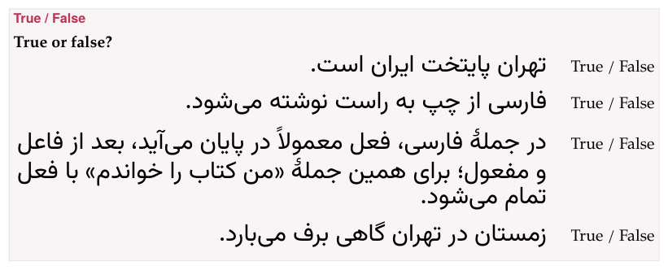

Choice: yes or no, true or false, one or all
In a choice exercise the learner picks: one answer, several, or Yes or No for each question. Six types share the machinery, and come in two shapes:
| Type | The learner picks | Rows |
|---|---|---|
yes-no | Yes or No, for each question | - question => yes |
true-false | True or False, for each statement | - statement => false |
single-choice | the one right answer | - [x] right, - [ ] wrong |
incorrect-part | the one wrong part of a sentence | - [x] wrong part, - [ ] part |
choose-all | every right answer | - [x] right, - [x] right, - [ ] wrong |
odd-one-out | the one that does not belong | - [x] odd one, - [ ] … |
The first two hold several questions in one exercise, each answered on its own; the other four are one question with several answers.
1. Marking the answers#
In yes-no and true-false each row is the question or statement, =>, and its answer: yes or no, true or false, in any case. An arrow inside the statement is written \=>.
In the other four each row is an answer with a mark in brackets before it: [x] for right, [ ] for wrong ([yes], [true] and [correct] count as right too, and anything else as wrong). single-choice, incorrect-part and odd-one-out need exactly one right answer; choose-all needs at least one. A row that begins with a target-language mark still needs its own bracket first: - [ ] [سلام]{tl}.
2. On the page#
- Yes / No and True / False.
- Each question has two buttons, Yes and No (or True and False); press one per question. The questions stay in the order written.
- One answer
- (
single-choice,incorrect-part,odd-one-out). Pressing an answer selects it, and pressing another moves the choice. - All answers
- (
choose-all). Each press selects or unselects an answer, independently. - The order.
- The answers of
single-choice,choose-allandodd-one-outare shuffled afresh each time the page opens, so the right one is never always first. The parts of anincorrect-partsentence are not — they are the sentence — and sit close together, as its pieces.
Check exercises then marks the answers: a chosen right answer ✓, a chosen wrong one ✕, and a right answer that was not chosen with a dashed frame and • correct answer — so a choice exercise always shows what it wanted. The exercise is right when exactly the right answers were chosen: for choose-all, all of them and nothing else; for Yes / No and True / False, every question’s.
3. On paper#
Yes / No and True / False are laid out for a pen. Each statement has a column of its own and wraps inside it, and the marks — Yes / No or True / False — sit in a column at the right that nothing else enters: one unbroken piece, level with the statement’s first line, at the same place on every row, so the student circles one of two words that stand one under the other all the way down. A statement in a right-to-left language is set flush right, next to the marks. (Before this layout, a long statement ran under the marks, and “/ False” could drop onto a line of its own.) Nothing runs under the marks at any print size: a word too long for the column is hyphenated there, and what cannot break at all is set smaller until it fits.

The other four print their answers as a list, a box □ before each to tick — in the order written, not shuffled. On paper the position of the right answer is therefore yours: when you write for a worksheet, do not always put it first. Nothing is marked: paper is the unsolved exercise.
4. Yes or no#
What it is for: quick questions about a text, a picture or a recording.
target: hi:::exercise yes-noprompt: Look at the picture and answer each question.image: images/starter-apple.svg {width=30 align=center}- क्या यह एक सेब है? => yes- क्या यह एक घर है? => no- क्या यह लाल है? => yesexplanation-correct: सेब *seb* is an apple, and this one is लाल *lāl*, red.:::
5. True or false#
What it is for: statements about a reading passage or a rule — true, or not.
:::exercise true-falseprompt: True or false?- [تهران پایتخت ایران است.]{tl} => true- [فارسی از چپ به راست نوشته میشود.]{tl} => false- [در جملهٔ فارسی، فعل معمولاً در پایان میآید، بعد از فاعل و مفعول؛ برای همین جملهٔ «من کتاب را خواندم» با فعل تمام میشود.]{tl} => trueexplanation-correct: Tehran is the capital; Persian is written from right to left; and the verb comes last.:::6. Choose one answer#
What it is for: the one right answer among a few — a meaning, a reading, a form.
target: ja:::exercise single-choiceprompt: Which is the reading of 学校, *school*?- [x] がっこう- [ ] がくせい- [ ] せんせいexplanation-correct: 学校 is がっこう *gakkō*; がくせい is 学生, a student, and せんせい 先生, a teacher.:::7. Identify the incorrect part#
What it is for: finding the mistake in a sentence. The rows are the sentence’s parts, in order, and the one with the mistake is marked [x]; put the whole sentence in the prompt as well, so it can be read in one piece, and say in the explanation what the error was.
target: fr:::exercise incorrect-partprompt: One part of this sentence is wrong. Which one?⏎[[Hier, je vais au marché avec ma sœur.]{tl}]{no-bold}- [ ] [Hier,]{tl}- [x] [je vais]{tl}- [ ] [au marché]{tl}- [ ] [avec ma sœur.]{tl}explanation-correct: [Hier]{tl}, *yesterday*, asks for the past: [je suis allé]{tl}, or [je suis allée]{tl}.:::Hier, je vais au marché avec ma sœur.
8. Choose all correct answers#
What it is for: sorting — every word of a kind, every valid translation.
target: zh:::exercise choose-allprompt: Choose every word that names a food.- [x] 苹果- [ ] 书- [x] 米饭- [ ] 桌子- [x] 面包explanation-correct: 苹果 *píngguǒ* an apple, 米饭 *mǐfàn* rice and 面包 *miànbāo* bread; 书 *shū* is a book, 桌子 *zhuōzi* a table.:::9. Odd one out#
What it is for: a group and the one item that does not belong to it — a word family, a set of forms.
target: it:::exercise odd-one-outprompt: Which word does not belong with the others?- [ ] [lunedì]{tl}- [ ] [martedì]{tl}- [x] [gennaio]{tl}- [ ] [venerdì]{tl}explanation-correct: [gennaio]{tl} is a month, January; the others are days of the week.:::10. In the form#
- For Yes / No questions and True / False questions: Questions and answers (or Statements and answers), each Question (or Statement) with its Correct answer chosen from a list, ↑ ↓ and Delete, and + Add question (or + Add statement).
- For Choose one answer, Odd one out and Identify the incorrect part: Answer choices (for the last, Sentence segments), each Choice (or Sentence segment) with a round button, Correct answer (This is the incorrect segment), of which one can be on; + Add choice (+ Add segment).
- For Choose all correct answers: the same with a tick box, Correct answer, on as many choices as are right.
11. In a deck#
+ Deck copies a choice exercise into an exercise deck as it is written. On the study page it is answered the same way and checked with Check or Enter — or Enter straight after clicking an answer. A choice marks the answer it wanted when it is checked, so it needs no solution shown under it. Exercises in a deck has the rest.